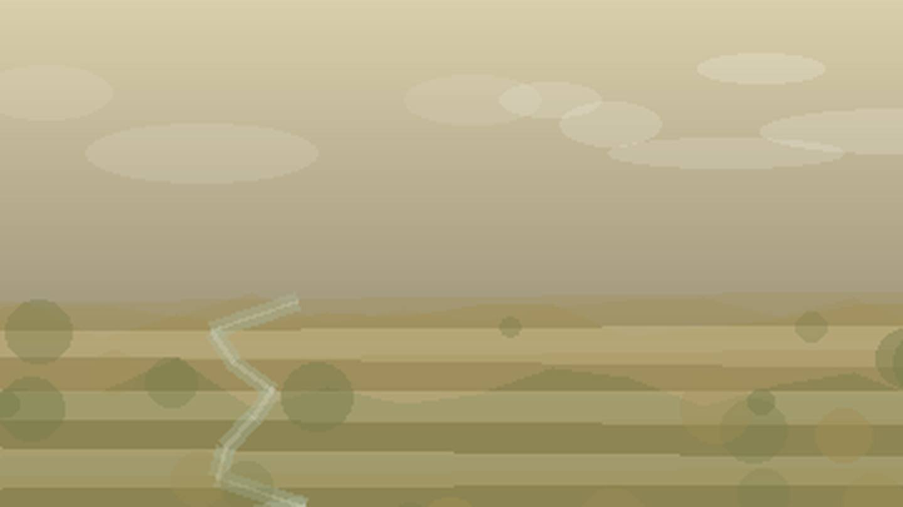

Главная / Ульяновская область

Ульяновская область
Что посадить
Что посадить
в Ульяновской области
Выберите природную зону в Ульяновской области: условия внутри региона различаются по теплу, влаге, ветру и длине сезона.
Правобережье: лесостепные условия дают хороший баланс для овощей, ягодников и плодового сада. Ориентиры внутри зоны: Ульяновск, Инза.
Открыть страницу зоны → ЛевобережьеЛевобережье: лесостепные условия дают хороший баланс для овощей, ягодников и плодового сада. Ориентиры внутри зоны: Димитровград, Новая Малыкла.
Открыть страницу зоны → северная зонасеверная зона: короткий сезон и прохладное лето требуют ранних сортов, укрытий и самых устойчивых культур. Ориентиры внутри зоны: Сурское, Карсун.
Открыть страницу зоны → южная зонаюжная зона: тёплая степная зона сильна для овощей, бахчевых и сада при контроле влаги. Ориентиры внутри зоны: Николаевка, Павловка.
Открыть страницу зоны →